1/2 KOPI TIAM
PANDUAN PENGGUNA
SISTEM STOK BAHAN BAKU
Operasional Cabang dan Gudang Utama
Versi 1.0
Juli 2026
Untuk Super Admin, Admin, Admin Gudang, dan Karyawan
Daftar Isi
- Pengenalan Sistem
- Role dan Hak Akses
- Login dan Keamanan Akun
- Mengenal Antarmuka dan Dashboard
- Stok/Barang Masuk
- Stok/Barang Keluar dan Distribusi
- Data Stok Gudang/Master Barang
- Laporan
- Preset dan Satuan Barang
- Manajemen Pengguna
- Log Aktivitas
- Backup Database
- Tentang Aplikasi
- SOP Koreksi dan Pemecahan Masalah
- Checklist Operasional
- Glosarium
Catatan: Nama menu menyesuaikan cabang aktif. Pada Gudang Utama digunakan istilah “Stok Gudang”, sedangkan cabang biasa dapat menampilkan istilah “Barang”.
1. Pengenalan Sistem
Sistem Stok Bahan Baku 1/2 Kopi Tiam digunakan untuk mencatat penerimaan, pemakaian, dan distribusi bahan baku pada setiap cabang. Setiap data operasional berada dalam ruang lingkup cabang aktif yang dipilih saat login.
Fungsi utama
- Memantau stok terkini kategori Bar dan Dapur.
- Mencatat barang masuk dan keluar.
- Mendistribusikan barang dari Gudang Utama ke cabang tujuan.
- Menyusun laporan, mencetak, dan mengekspor data.
- Mengelola preset barang, satuan, pengguna, log, dan backup.
Konsep stok
Master barang menyimpan stok aktual. Transaksi stok menyimpan histori masuk dan keluar. Keduanya harus diperiksa bersama saat terjadi selisih.
| Jumlah stok | Status |
|---|
| 0 | Kosong |
| 1–5 | Menipis |
| 6 atau lebih | Aman |
2. Role dan Hak Akses
| Role | Tanggung jawab |
|---|
| Super Admin | Mengakses seluruh fitur dan memilih cabang kerja ketika login. |
| Admin | Mengelola operasional, laporan, pengguna, log, dan backup cabang. |
| Admin Gudang | Mengelola penerimaan dan distribusi barang pada Gudang Utama. |
| Karyawan | Mencatat operasional dan melihat laporan sesuai menu yang tersedia. |
Prinsip keamanan: gunakan akun sendiri, jangan berbagi password, pilih cabang yang benar, dan logout setelah selesai. Hubungi Super Admin jika menu tidak sesuai tanggung jawab.
3. Login dan Keamanan Akun
Login
- Buka alamat aplikasi dan pilih tab Login.
- Masukkan username dan password.
- Pilih cabang tempat bekerja.
- Tekan Masuk.
Pengguna selain Super Admin harus memilih cabang yang terhubung dengan akunnya. Pesan akun tidak ditemukan di cabang berarti pilihan cabang perlu diperiksa.
Lupa password
- Pilih tab Lupa Pass.
- Masukkan username untuk menampilkan pertanyaan keamanan.
- Masukkan tanggal lahir, jawaban keamanan, dan password baru.
- Konfirmasikan password baru.
Pendaftaran pertama
Tab Daftar hanya aktif ketika sistem belum mempunyai Super Admin. Proses ini digunakan satu kali saat instalasi awal.
Logout
Buka menu profil di kanan atas lalu pilih logout. Jangan hanya menutup tab pada komputer bersama.
4. Antarmuka dan Dashboard
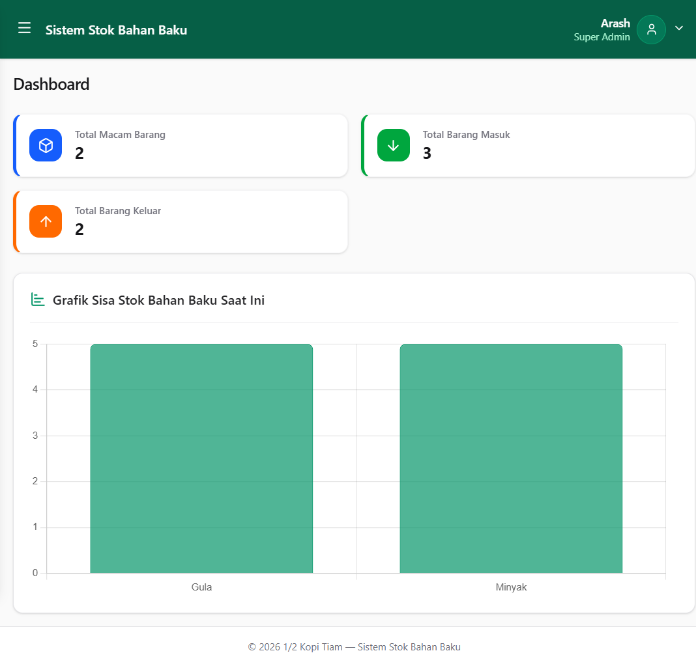
Dashboard Gudang Utama
Sidebar di kiri berisi Transaksi, Master Data, Laporan, Pengaturan, dan Bantuan. Header menampilkan nama serta role pengguna.
| Informasi | Arti |
|---|
| Total Macam Barang | Jumlah jenis/master barang cabang aktif. |
| Total Barang Masuk | Jumlah catatan transaksi masuk, bukan jumlah unit. |
| Total Barang Keluar | Jumlah catatan transaksi keluar, bukan jumlah unit. |
| Grafik Sisa Stok | Perbandingan stok terkini barang dengan stok tertinggi. |
5. Stok/Barang Masuk
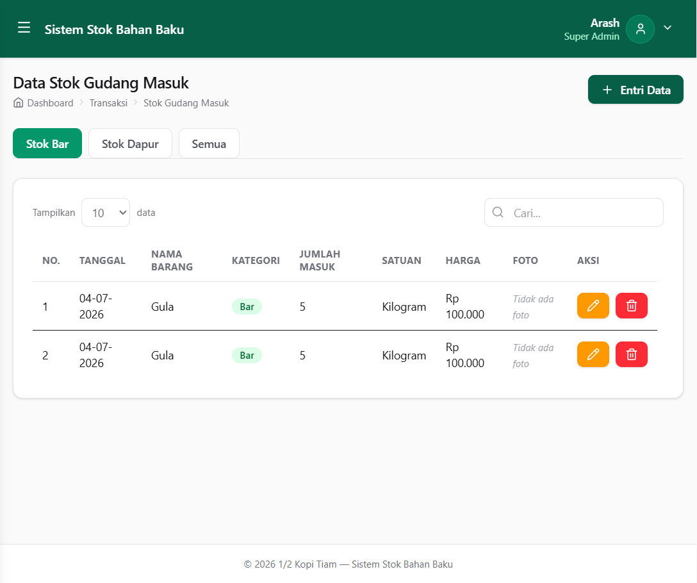
Halaman Stok Gudang Masuk
Mencatat barang masuk
- Pilih menu Stok Gudang Masuk atau Barang Masuk.
- Tekan tombol tambah data.
- Pilih tanggal transaksi.
- Pilih kategori Bar atau Dapur.
- Pilih nama dari preset atau masukkan nama barang sesuai pola penamaan.
- Masukkan jumlah dan satuan.
- Khusus Gudang Utama, masukkan harga total pembelian.
- Unggah foto nota/barang bila diperlukan.
- Periksa kembali lalu simpan.
Sistem akan menambah stok master atau membuat master baru jika barang belum tersedia.
Praktik baik: hindari variasi nama seperti “Gula”, “gula”, dan “Gula Pasir” untuk barang yang sama. Gunakan preset agar konsisten.
Peringatan koreksi: saat ini perubahan atau penghapusan histori transaksi tidak otomatis merekonsiliasi stok master. Jangan mengedit atau menghapus transaksi tanpa prosedur koreksi dan persetujuan penanggung jawab.
6. Stok/Barang Keluar dan Distribusi
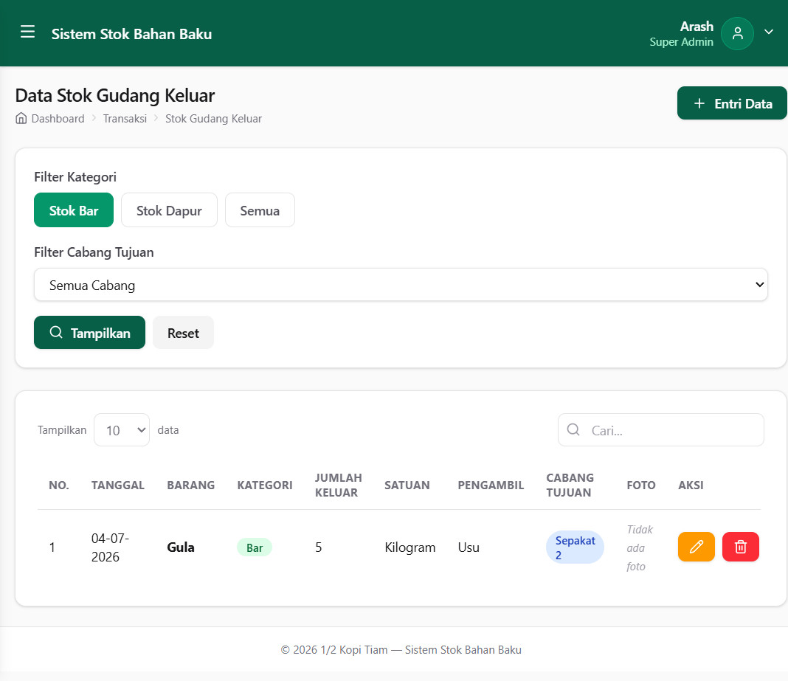
Halaman Stok Gudang Keluar
Barang keluar cabang
- Pilih barang yang stoknya tersedia.
- Isi tanggal dan jumlah keluar.
- Pastikan jumlah tidak melebihi stok.
- Unggah bukti bila diperlukan.
- Simpan transaksi.
Distribusi dari Gudang Utama
- Pilih barang yang akan didistribusikan.
- Masukkan jumlah keluar.
- Masukkan nama pengambil barang.
- Pilih cabang tujuan dengan teliti.
- Simpan dan pastikan transaksi berhasil.
- Minta cabang tujuan memverifikasi transaksi auto-masuk dan stok penerimaan.
Sistem mengurangi stok gudang, menambah stok cabang tujuan, membuat transaksi keluar di gudang, dan transaksi masuk otomatis di cabang penerima.
Sangat penting: edit/hapus distribusi belum otomatis memperbarui transaksi pasangan dan stok cabang tujuan. Jika salah cabang atau jumlah, hentikan koreksi mandiri dan ikuti SOP pada Bab 14.
7. Data Stok Gudang/Master Barang
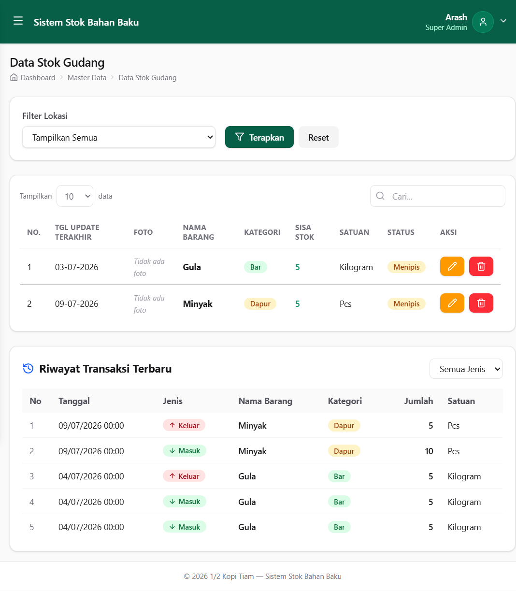
Data stok aktual dan transaksi terbaru
Halaman ini menampilkan foto, nama, kategori, stok terkini, satuan, status, dan tanggal pembaruan. Gunakan filter kategori untuk memisahkan Bar dan Dapur.
Sebelum mengedit
- Pastikan barang dan cabang aktif sudah benar.
- Cocokkan stok fisik dengan histori transaksi.
- Catat alasan koreksi di catatan operasional terpisah.
- Mintalah persetujuan Admin atau Super Admin.
Perubahan stok langsung tidak membuat transaksi koreksi. Penghapusan master barang juga dapat menghapus histori terkait. Hindari tombol hapus kecuali telah dilakukan backup dan audit dampak.
8. Laporan
8.1 Laporan Stok
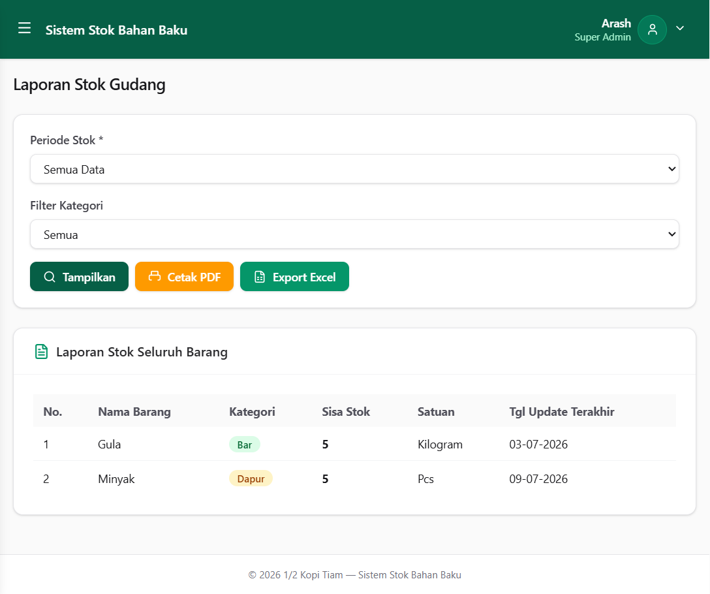
Pilih periode dan kategori, lalu tekan Tampilkan. Tanggal pada laporan stok menunjukkan pembaruan master, bukan rekonstruksi stok historis pada tanggal tersebut.
8.2 Laporan Barang Masuk
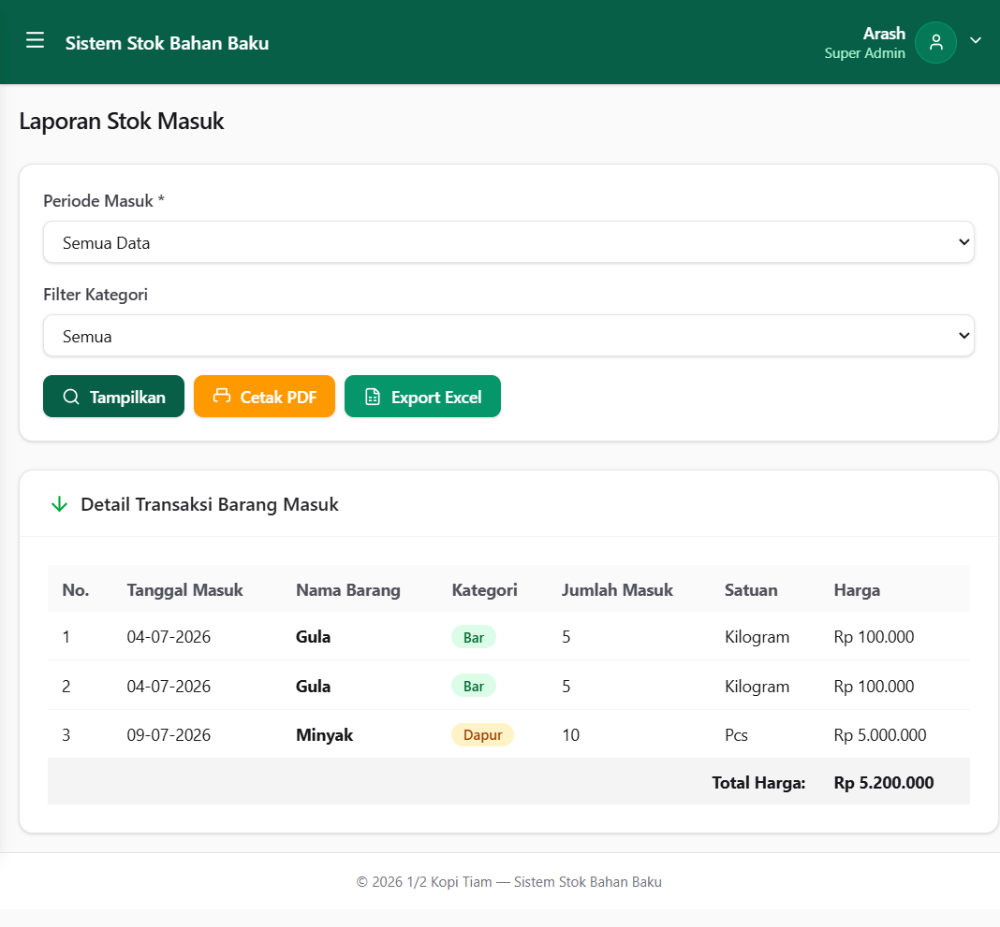
Gunakan filter periode dan kategori untuk memeriksa penerimaan. Gudang Utama dapat melihat harga total pada tampilan yang mendukungnya.
8.3 Laporan Barang Keluar
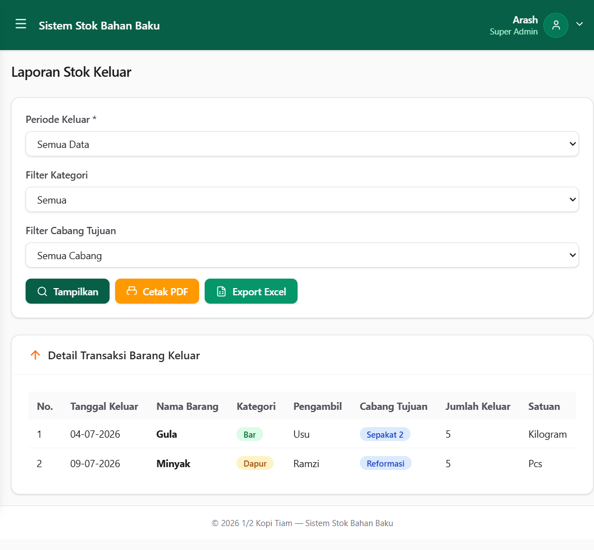
Gudang Utama dapat memfilter cabang tujuan untuk memeriksa distribusi.
Cetak dan export
- Tentukan filter terlebih dahulu.
- Tekan Tampilkan dan periksa hasil.
- Pilih Cetak PDF untuk membuka tampilan cetak dan gunakan dialog print browser.
- Pilih Export Excel untuk mengunduh CSV yang dapat dibuka di Excel.
Walaupun tombol bertuliskan Export Excel, file yang dihasilkan menggunakan format CSV. Beberapa kolom tampilan mungkin tidak tersedia di file export.
9. Preset dan Satuan Barang
Preset Barang
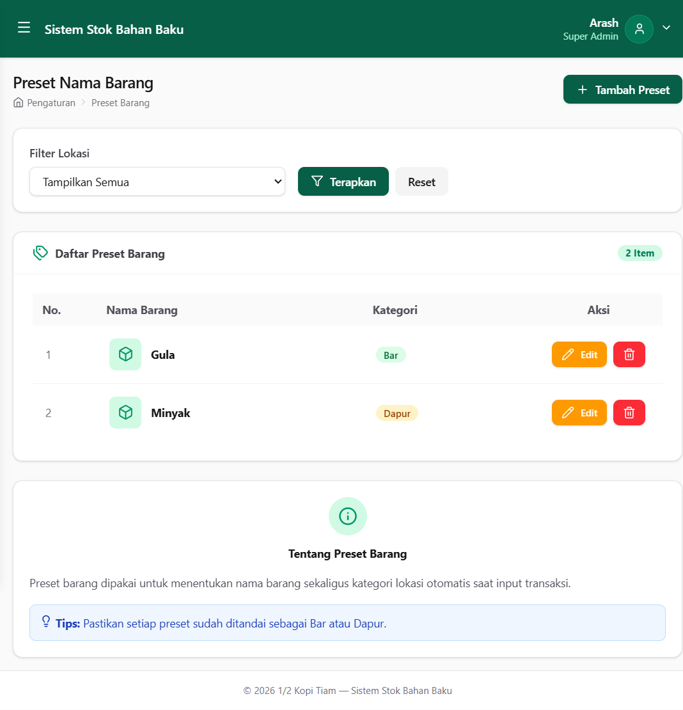
Preset menyediakan pilihan nama barang saat input barang masuk. Pilih kategori yang benar dan hindari nama duplikat.
- Buka Preset Barang.
- Tambah nama dan kategori.
- Simpan lalu periksa pada formulir barang masuk.
Satuan Barang
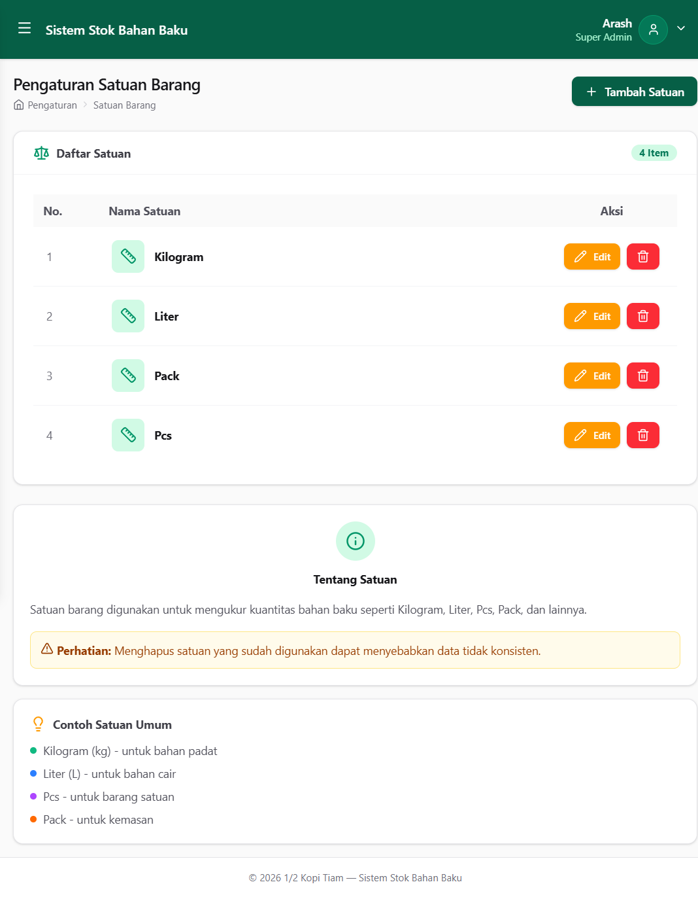
Satuan bersifat global, misalnya Kilogram, Pcs, Botol, Liter, atau Dus. Gunakan satu bentuk penulisan yang konsisten.
Jangan menghapus satuan yang sedang digunakan oleh master barang. Periksa seluruh data terlebih dahulu.
10. Manajemen Pengguna
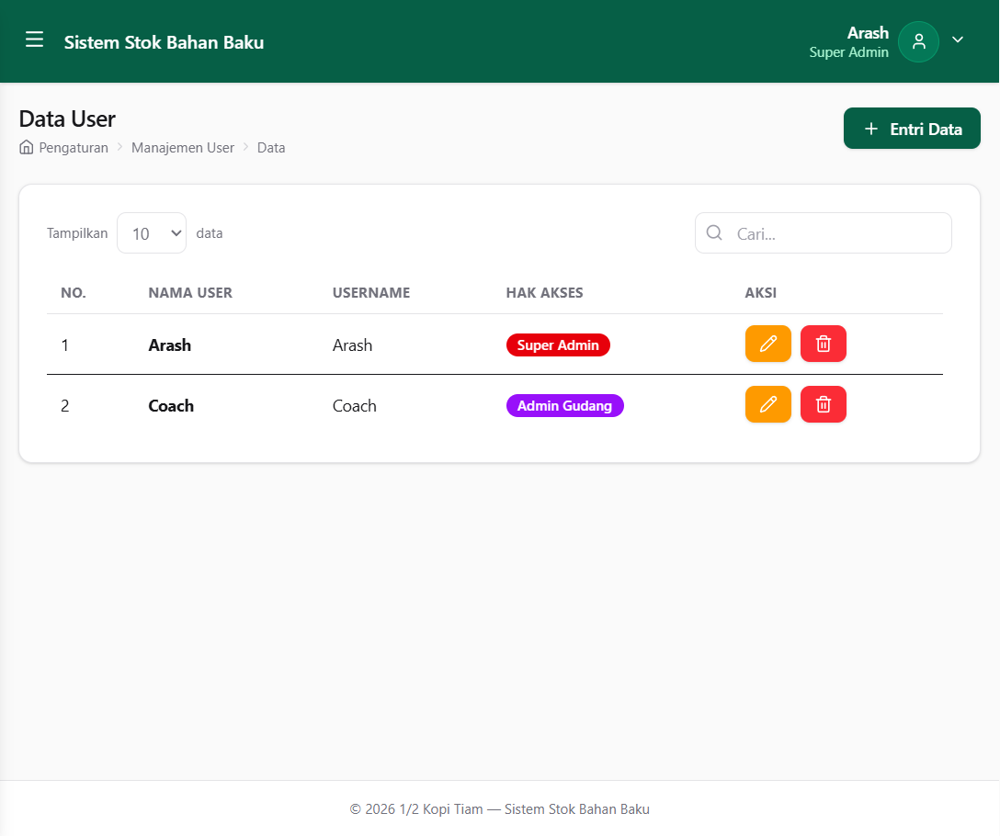
Menu ini digunakan untuk menambah, mengubah, atau menghapus akun sesuai cabang aktif.
Menambah pengguna
- Tekan tambah pengguna.
- Isi nama, username, password, role, tanggal lahir, pertanyaan dan jawaban keamanan.
- Pastikan role dan cabang sesuai tugas.
- Simpan dan minta pengguna menguji login.
Perubahan akun
Password hanya diubah bila diperlukan. Jangan mengubah role tanpa persetujuan penanggung jawab. Hindari menghapus akun yang masih dibutuhkan untuk penelusuran histori.
11. Log Aktivitas
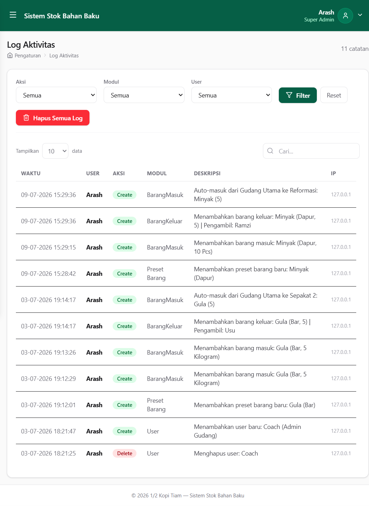
Log mencatat pengguna, tindakan, objek, deskripsi, alamat IP, dan waktu. Gunakan filter tindakan, model, dan pengguna untuk audit.
Jangan gunakan Hapus Semua sebelum backup atau investigasi selesai. Login, logout, export, dan download backup belum tentu tercatat dalam log.
12. Backup Database
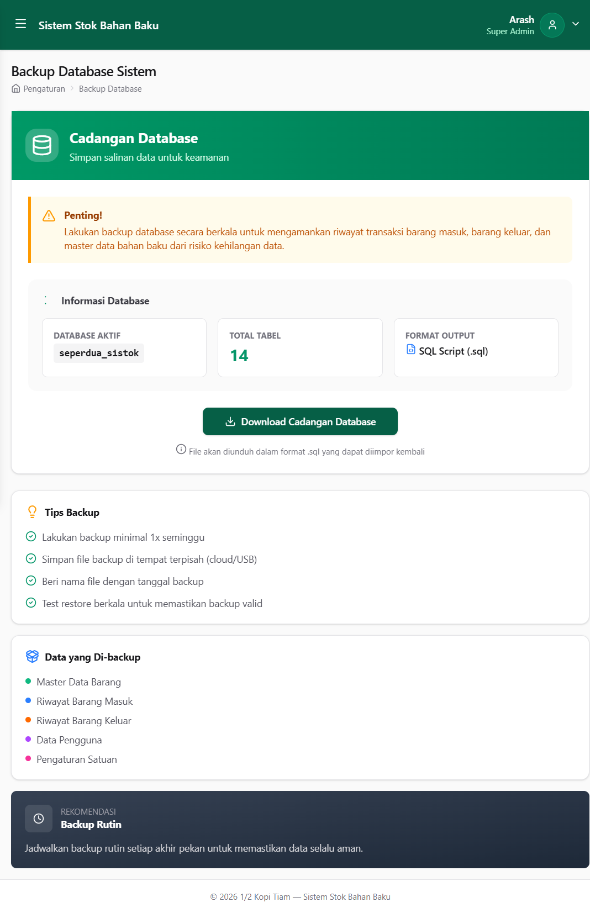
- Buka Backup Database.
- Baca informasi cakupan backup.
- Tekan download backup.
- Simpan file SQL di lokasi aman dengan tanggal yang jelas.
- Jangan mengirim file melalui kanal publik.
File backup dapat memuat data sensitif dan sebagian data global. Proses restore hanya boleh dilakukan administrator teknis setelah validasi dan backup tambahan.
13. Tentang Aplikasi
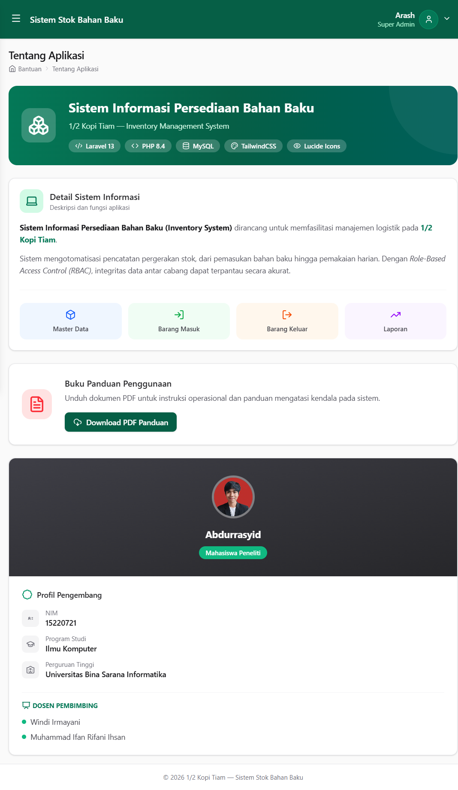
Halaman Tentang berisi identitas aplikasi dan tautan buku panduan. PDF final dapat ditempatkan sebagai public/downloads/Panduan_Sistem_Stok_Kopi_Tiam.pdf agar dapat diunduh dari aplikasi.
14. SOP Koreksi dan Pemecahan Masalah
SOP stok tidak sesuai
- Hentikan transaksi pada barang terkait sementara.
- Catat stok fisik, stok master, dan transaksi terakhir.
- Ambil backup sebelum koreksi.
- Laporkan kepada Admin/Super Admin.
- Jangan menghapus transaksi sebagai langkah pertama.
- Lakukan koreksi yang disetujui dan dokumentasikan alasan, waktu, serta petugas.
- Verifikasi ulang laporan dan stok fisik.
SOP kesalahan distribusi
- Hubungi Gudang Utama dan cabang tujuan.
- Catat barang, jumlah, transaksi asal, dan transaksi auto-masuk.
- Jangan mengedit/hapus salah satu sisi secara sepihak.
- Rekonsiliasi stok gudang dan cabang secara bersama.
- Simpan bukti persetujuan koreksi.
| Masalah | Tindakan |
|---|
| Akun tidak ditemukan di cabang | Periksa cabang pilihan dan hubungi Admin untuk memeriksa cabang akun. |
| Jumlah keluar melebihi stok | Periksa stok master dan jumlah input; lakukan stok fisik jika berbeda. |
| Akses 403 | Role tidak diizinkan atau konfigurasi menu tidak sesuai; hubungi Super Admin. |
| Preset tidak tampil | Periksa cabang aktif dan kategori preset. |
| CSV sulit dibaca | Buka melalui menu impor CSV Excel dan pilih pemisah yang sesuai. |
| Foto gagal tampil | Periksa format/ukuran file dan koneksi; simpan bukti secara terpisah. |
15. Checklist Operasional
Harian cabang
- Cabang aktif pada header sudah benar.
- Semua penerimaan hari ini sudah dicatat.
- Semua pemakaian/pengeluaran sudah dicatat.
- Stok menipis dan kosong sudah dilaporkan.
- Stok fisik barang penting sesuai sistem.
- Pengguna logout setelah selesai.
Distribusi Gudang Utama
- Nama barang, jumlah, satuan, dan kategori benar.
- Nama pengambil sudah dicatat.
- Cabang tujuan sudah dikonfirmasi.
- Cabang penerima memverifikasi auto-masuk.
- Selisih segera direkonsiliasi sebelum transaksi berikutnya.
Mingguan Admin
- Review laporan masuk dan keluar.
- Review log aktivitas.
- Periksa akun dan role pengguna.
- Unduh backup dan simpan aman.
- Catat koreksi stok yang dilakukan.
16. Glosarium
| Istilah | Definisi |
|---|
| Cabang aktif | Cabang yang dipilih saat login dan menjadi ruang lingkup data. |
| Gudang Utama | Unit penerimaan dan distribusi barang ke cabang. |
| Master barang | Data stok aktual berdasarkan barang, kategori, dan cabang. |
| Barang masuk | Transaksi yang menambah stok. |
| Barang keluar | Transaksi yang mengurangi stok. |
| Auto-masuk | Transaksi masuk otomatis pada cabang tujuan distribusi. |
| Preset barang | Daftar nama barang siap pilih. |
| Kategori lokasi | Penempatan barang: Bar atau Dapur. |
| Harga total | Nilai pembelian per transaksi masuk Gudang Utama. |
| Log aktivitas | Catatan tindakan pengguna untuk keperluan audit. |